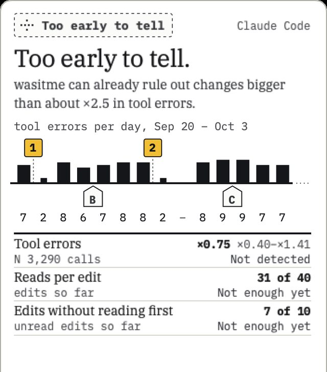
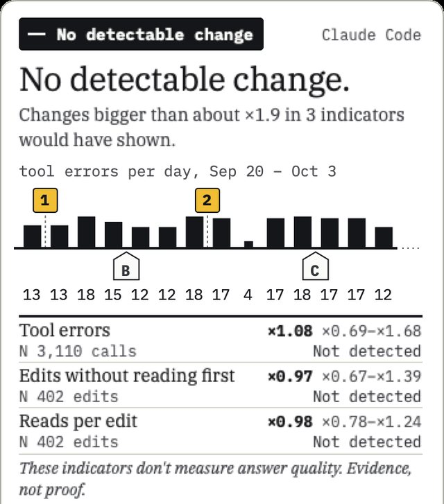
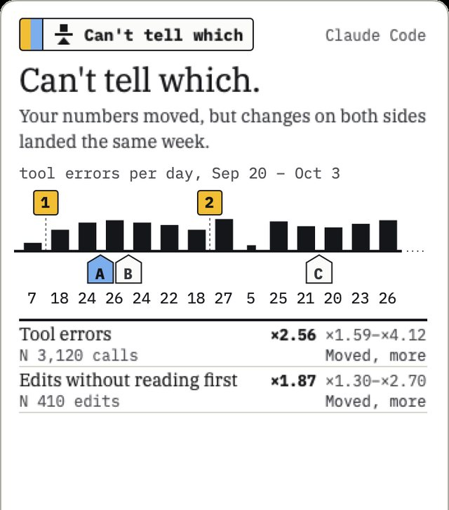
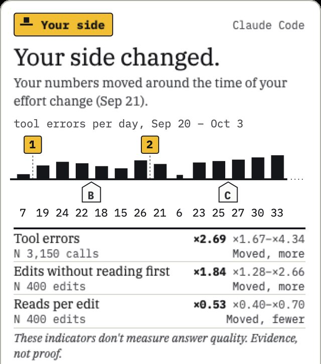
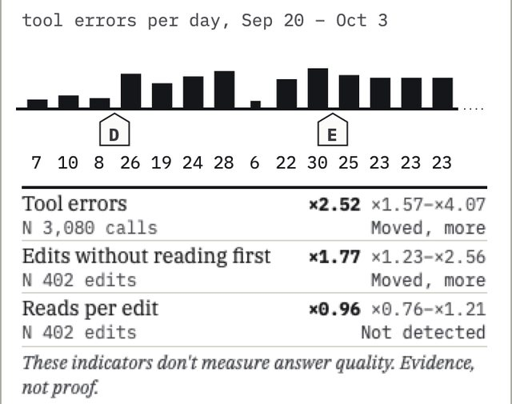

Measure twice, blame once.
Your agent feels different this week.
Or did you change something?
Was it me, or the model?
Try moving them across the line.
wasitme reads your own Claude Code and Codex session logs on your Mac and says which side changed, yours or the agent’s, only when the evidence supports it. Otherwise it says Too early to tell.
Free, open source (MIT). No network code. Only the installer downloads, and only when you run it. No account, no telemetry.
Forty-two days of demo data, from Aug 23. Day 1 of 42.
wasitme compares your last 14 complete days with the 28 before them, so it won’t name a side before it has 42 days. Here are 42 days of demo data, one tool error per tick. Your changes land above the line, Claude Code’s updates below it.
Tool errors per day on demo data, Aug 23 to Oct 3: 193 errors in 5,528 tool calls in the 28 days before, 296 in 3,150 in the recent 14 days; 2 changes of yours above the line, 7 on the agent’s side below it. Oct 4, today, is excluded.
- Aug 23: 2 tool errors in 57 tool calls
- Aug 24: 7 tool errors in 200 tool calls
- Aug 25: 10 tool errors in 284 tool calls
- Aug 26: 9 tool errors in 273 tool calls
- Aug 27: 7 tool errors in 192 tool calls; Claude Code A: Claude Code 2.1.249 → 2.1.255, routine update
- Aug 28: 9 tool errors in 252 tool calls
- Aug 29: no sessions, nothing to count
- Aug 30: 7 tool errors in 202 tool calls
- Aug 31: 6 tool errors in 173 tool calls
- Sep 1: 7 tool errors in 194 tool calls
- Sep 2: 7 tool errors in 212 tool calls
- Sep 3: 10 tool errors in 278 tool calls; Claude Code B: Claude Code 2.1.255 → 2.1.262, routine update
- Sep 4: 8 tool errors in 216 tool calls
- Sep 5: 9 tool errors in 264 tool calls
- Sep 6: 8 tool errors in 231 tool calls
- Sep 7: 5 tool errors in 160 tool calls
- Sep 8: 11 tool errors in 290 tool calls
- Sep 9: 7 tool errors in 214 tool calls
- Sep 10: 6 tool errors in 188 tool calls
- Sep 11: 9 tool errors in 247 tool calls
- Sep 12: 4 tool errors in 121 tool calls; Claude Code C: Claude Code 2.1.262 → 2.1.266, routine update
- Sep 13: 0 tool errors in 38 tool calls
- Sep 14: 7 tool errors in 205 tool calls
- Sep 15: 10 tool errors in 262 tool calls; Claude Code D: Claude Code 2.1.266 → 2.1.270, routine update
- Sep 16: 8 tool errors in 230 tool calls
- Sep 17: 6 tool errors in 176 tool calls
- Sep 18: 9 tool errors in 219 tool calls; Claude Code E: Claude Code 2.1.270 → 2.1.274, routine update
- Sep 19: 5 tool errors in 150 tool calls
- Sep 20: 7 tool errors in 201 tool calls
- Sep 21: 19 tool errors in 224 tool calls; your change 1: Effort high → medium, lines up with the shift
- Sep 22: 24 tool errors in 251 tool calls
- Sep 23: 22 tool errors in 230 tool calls
- Sep 24: 18 tool errors in 196 tool calls; Claude Code F: Claude Code 2.1.274 → 2.1.277, routine update
- Sep 25: 15 tool errors in 171 tool calls
- Sep 26: 26 tool errors in 262 tool calls
- Sep 27: 21 tool errors in 228 tool calls; your change 2: MCP server added
- Sep 28: 6 tool errors in 64 tool calls
- Sep 29: 23 tool errors in 244 tool calls
- Sep 30: 25 tool errors in 259 tool calls
- Oct 1: 27 tool errors in 276 tool calls; Claude Code G: Claude Code 2.1.277 → 2.1.281, routine update
- Oct 2: 30 tool errors in 296 tool calls
- Oct 3: 33 tool errors in 248 tool calls
- Oct 4: today, excluded. Complete local days only.
The argument, staged on demo data You: “I didn’t touch a thing.” The agent: “I had two updates. Routine ones.” Referee: “Show me counts.”
Reads your Claude Code and Codex session logs, read-only.
Tag A, Aug 27 Claude Code 2.1.255. Routine updates alone aren’t evidence.
History It outlives Claude Code’s 30-day transcript cleanup.
Sep 19 The before window closes: 28 days.
Sep 20 The recent window opens: 14 days.
Sticker 1, Sep 21 Effort high → medium
Sticker 2, Sep 27 MCP server added
Gates recent: 402 exchanges, 9 sessions, 31 session-days. before: 655, 13, 52. Each needs at least 10 events, 10 session-days and 5 sessions, no single session supplying half.
Oct 4, the demo’s today Excluded. Complete local days only. Half a day is not a day.
Demo data from wasitme demo, not anyone’s logs. The method’s rule, replayed: it compares the last 14 complete days with the 28 before, so it won’t name a side before day 42. A real comparison also needs enough events, session-days and sessions in each window.
The finding: Your side changed.
Your numbers moved around the time of your effort change (Sep 21). These indicators don't measure answer quality. Evidence, not proof.
- Evidence
- Tool errors (×2.7) and edits without reading first (×1.8) rose and reads per edit (×0.53) fell; nothing recorded changed on Claude Code's side in the same window.
- Data
- Based on 1,057 exchanges over 83 session-days (22 sessions) on this Mac. Sessions on other machines aren't visible.
- Next
- To check, set effort back to high.
Staged on demo data
- youOh.
- the agentRoutine, I said.
- refereeAround the time of. Not because of.
How it decides
It names a change only when two different kinds of indicator move the same way and none moves the other way. Routine agent updates alone are never enough.
- Windows
- Your last 14 complete days against the 28 before them. Today is left out. Longer tiers, 21 against 42 and 28 against 56 days, are used when the shorter one can’t compare.
- Enough in each
- At least 10 events, 10 session-days and 5 sessions per window, and no single session supplying half.
- Voting kinds
- Errors: tool errors, excluding commands. Research: reads per edit, and edits without reading first. Interruptions and pushback are shown beside them and never decide.
- Every number
- comes with a range, and the smallest change it could have shown at that volume of data.
- While it waits
- it counts what is missing, as in “31 of 40 edits”. It doesn’t predict a date.
wasitme demo --case you: recent 14 days against the 28 before. Hover or focus a row to put the calipers on its range.-
Tool errorsper 100 tool callsrecent 296 / 3,150before 193 / 5,528×2.69range ×1.67–×4.34; changes under ×2 wouldn’t showmoved, more
-
Reads per editreads per editrecent 1,240 / 400before 4,830 / 820×0.53range ×0.40–×0.70; changes under ×1.5 wouldn’t showmoved, fewer
-
Edits without reading firstper 100 editsrecent 71 / 400before 79 / 820×1.84range ×1.28–×2.66; changes under ×1.7 wouldn’t showmoved, more
-
Interruptionscontext, doesn’t voterecent 4 / 402before 13 / 655only 4 in the recent windowcontext
the ratio, recent over before range too small to show
Try the rule yourself, and read the engine’s own trace
The engine’s own trace for the demo
For the demo’s change, the engine walks its decision table in order and stops at the first row that matches. Rows 1 to 6 are conditions that held, so it moved on; row 1 is reworded from the engine’s text so it doesn’t overstate the calibration.
- 1wasitme’s synthetic-user tests pass for Claude Code logs.Those users are made up: it shows the rules behave as designed, not that real logs behave the same way.holds, next row
- 2Each kind of indicator has one with enough data.holds, next row
- 3No indicators moved in opposite directions.holds, next row
- 4The shift holds when your projects and setup are compared like with like.holds, next row
- 5Every change in the onset window has a known side.holds, next row
- 6Nothing on the agent's side but routine updates is in the onset window.holds, next row
- 7Your effort change from high to medium (Sep 21) falls in the onset window and wasn't ruled out; on the agent's side there are only routine updates.matched, stops here
The full table, every gate and every number behind them: METHOD.md.
Same calendar. Five histories.
Five demo histories through the real engine, from the most common answer to the rarest. Too early to tell is common, on purpose. Each history letters its own updates in time order, so a letter can name a different version in each.
While you’re in this drawer, keys 1 to 5 switch histories. Typing demo files the next one.
Too early to tell Too early to tell.
Not enough data in both windows yet. It says what it can already rule out, and what is missing.
- Headline
- wasitme can already rule out changes bigger than about ×2.5 in tool errors.
- Evidence
- Only tool errors have enough data so far; reads per edit and edits without reading first need more sessions.
- Next
- Keep working normally; wasitme checks every 15 minutes.
- reads per edit 31 of 40 edits, 4 of 5 sessions, 9 of 10 session-days
- edits without reading first 7 of 10 events, 4 of 5 sessions, 9 of 10 session-days
No date yet: it depends on how your sessions go.

- Aug 23: 8 tool errors in 223 tool calls
- Aug 24: 8 tool errors in 227 tool calls
- Aug 25: 9 tool errors in 237 tool calls
- Aug 26: 7 tool errors in 201 tool calls
- Aug 27: 10 tool errors in 283 tool calls; Claude Code A: Claude Code 2.1.249 → 2.1.255, routine update
- Aug 28: 11 tool errors in 300 tool calls
- Aug 29: no sessions, nothing to count
- Aug 30: 2 tool errors in 64 tool calls
- Aug 31: 7 tool errors in 203 tool calls
- Sep 1: 10 tool errors in 284 tool calls
- Sep 2: 7 tool errors in 205 tool calls
- Sep 3: 8 tool errors in 219 tool calls; Claude Code B: Claude Code 2.1.255 → 2.1.262, routine update
- Sep 4: 11 tool errors in 293 tool calls
- Sep 5: no sessions, nothing to count
- Sep 6: 2 tool errors in 64 tool calls
- Sep 7: 8 tool errors in 227 tool calls
- Sep 8: 9 tool errors in 238 tool calls
- Sep 9: 9 tool errors in 237 tool calls
- Sep 10: 9 tool errors in 258 tool calls
- Sep 11: 10 tool errors in 274 tool calls
- Sep 12: no sessions, nothing to count; Claude Code C: Claude Code 2.1.262 → 2.1.266, routine update
- Sep 13: 2 tool errors in 64 tool calls
- Sep 14: 9 tool errors in 242 tool calls
- Sep 15: 9 tool errors in 253 tool calls; Claude Code D: Claude Code 2.1.266 → 2.1.270, routine update
- Sep 16: 10 tool errors in 277 tool calls
- Sep 17: 9 tool errors in 243 tool calls
- Sep 18: 7 tool errors in 208 tool calls; Claude Code E: Claude Code 2.1.270 → 2.1.274, routine update
- Sep 19: 10 tool errors in 286 tool calls
- Sep 20: 7 tool errors in 266 tool calls
- Sep 21: 2 tool errors in 77 tool calls; your change 1: Effort high → medium
- Sep 22: 8 tool errors in 286 tool calls
- Sep 23: 6 tool errors in 235 tool calls
- Sep 24: 7 tool errors in 247 tool calls; Claude Code F: Claude Code 2.1.274 → 2.1.277, routine update
- Sep 25: 8 tool errors in 288 tool calls
- Sep 26: 8 tool errors in 320 tool calls
- Sep 27: 2 tool errors in 77 tool calls; your change 2: MCP server added
- Sep 28: no sessions, nothing to count
- Sep 29: 8 tool errors in 308 tool calls
- Sep 30: 9 tool errors in 326 tool calls
- Oct 1: 9 tool errors in 323 tool calls; Claude Code G: Claude Code 2.1.277 → 2.1.281, routine update
- Oct 2: 7 tool errors in 271 tool calls
- Oct 3: 7 tool errors in 266 tool calls
- Oct 4: today, excluded. Complete local days only.
wasitme demo --case insufficient: tool errors per day, your changes above the line, Claude Code’s updates below.No detectable change No detectable change.
It compared, and changes bigger than about the stated size would have shown.
- Headline
- Changes bigger than about ×1.9 in 3 indicators would have shown.
- Evidence
- wasitme compared tool errors, edits without reading first and reads per edit over your last 14 days against the 28 before.

- Aug 23: 12 tool errors in 198 tool calls
- Aug 24: 12 tool errors in 191 tool calls
- Aug 25: 12 tool errors in 193 tool calls
- Aug 26: 13 tool errors in 221 tool calls
- Aug 27: 13 tool errors in 213 tool calls; Claude Code A: Claude Code 2.1.249 → 2.1.255, routine update
- Aug 28: 12 tool errors in 207 tool calls
- Aug 29: no sessions, nothing to count
- Aug 30: 13 tool errors in 215 tool calls
- Aug 31: 16 tool errors in 270 tool calls
- Sep 1: 12 tool errors in 192 tool calls
- Sep 2: 16 tool errors in 260 tool calls
- Sep 3: 12 tool errors in 207 tool calls; Claude Code B: Claude Code 2.1.255 → 2.1.262, routine update
- Sep 4: 11 tool errors in 184 tool calls
- Sep 5: 3 tool errors in 57 tool calls
- Sep 6: 11 tool errors in 185 tool calls
- Sep 7: 16 tool errors in 269 tool calls
- Sep 8: 16 tool errors in 261 tool calls
- Sep 9: 12 tool errors in 205 tool calls
- Sep 10: 17 tool errors in 275 tool calls
- Sep 11: 15 tool errors in 242 tool calls
- Sep 12: no sessions, nothing to count; Claude Code C: Claude Code 2.1.262 → 2.1.266, routine update
- Sep 13: 15 tool errors in 244 tool calls
- Sep 14: 12 tool errors in 201 tool calls
- Sep 15: 11 tool errors in 175 tool calls; Claude Code D: Claude Code 2.1.266 → 2.1.270, routine update
- Sep 16: 13 tool errors in 211 tool calls
- Sep 17: 14 tool errors in 224 tool calls
- Sep 18: 15 tool errors in 256 tool calls; Claude Code E: Claude Code 2.1.270 → 2.1.274, routine update
- Sep 19: 14 tool errors in 224 tool calls
- Sep 20: 13 tool errors in 202 tool calls
- Sep 21: 13 tool errors in 205 tool calls; your change 1: Effort high → medium
- Sep 22: 18 tool errors in 276 tool calls
- Sep 23: 15 tool errors in 229 tool calls
- Sep 24: 12 tool errors in 179 tool calls; Claude Code F: Claude Code 2.1.274 → 2.1.277, routine update
- Sep 25: 12 tool errors in 182 tool calls
- Sep 26: 18 tool errors in 269 tool calls
- Sep 27: 17 tool errors in 266 tool calls; your change 2: MCP server added
- Sep 28: 4 tool errors in 58 tool calls
- Sep 29: 17 tool errors in 255 tool calls
- Sep 30: 18 tool errors in 272 tool calls
- Oct 1: 17 tool errors in 264 tool calls; Claude Code G: Claude Code 2.1.277 → 2.1.281, routine update
- Oct 2: 17 tool errors in 267 tool calls
- Oct 3: 12 tool errors in 186 tool calls
- Oct 4: today, excluded. Complete local days only.
wasitme demo --case none: tool errors per day, your changes above the line, Claude Code’s updates below.Can’t tell which Can’t tell which.
Numbers moved, but it can’t say which side, and it gives the reason.
- Headline
- Your numbers moved, but changes on both sides landed the same week.
- Evidence
- Your effort change (Sep 21) and Claude Code serving a model other than the one you picked (Sep 23) both line up with the shift: tool errors ×2.6, edits without reading first ×1.9.
- Next
- Undo your effort change to separate them.
Tag F is filled: “Served model differs from the one you picked” (Sep 23), on the agent’s side, in the same week as your change 1.

- Aug 23: 7 tool errors in 201 tool calls
- Aug 24: 7 tool errors in 183 tool calls
- Aug 25: 6 tool errors in 178 tool calls
- Aug 26: 10 tool errors in 267 tool calls
- Aug 27: 6 tool errors in 178 tool calls; Claude Code A: Claude Code 2.1.249 → 2.1.255, routine update
- Aug 28: 10 tool errors in 265 tool calls
- Aug 29: no sessions, nothing to count
- Aug 30: 2 tool errors in 58 tool calls
- Aug 31: 9 tool errors in 254 tool calls
- Sep 1: 6 tool errors in 177 tool calls
- Sep 2: 7 tool errors in 205 tool calls
- Sep 3: 8 tool errors in 215 tool calls; Claude Code B: Claude Code 2.1.255 → 2.1.262, routine update
- Sep 4: 10 tool errors in 272 tool calls
- Sep 5: no sessions, nothing to count
- Sep 6: 10 tool errors in 284 tool calls
- Sep 7: 10 tool errors in 276 tool calls
- Sep 8: 8 tool errors in 218 tool calls
- Sep 9: 7 tool errors in 183 tool calls
- Sep 10: 10 tool errors in 284 tool calls
- Sep 11: 8 tool errors in 225 tool calls
- Sep 12: no sessions, nothing to count; Claude Code C: Claude Code 2.1.262 → 2.1.266, routine update
- Sep 13: 9 tool errors in 263 tool calls
- Sep 14: 9 tool errors in 247 tool calls
- Sep 15: 7 tool errors in 188 tool calls; Claude Code D: Claude Code 2.1.266 → 2.1.270, routine update
- Sep 16: 10 tool errors in 282 tool calls
- Sep 17: 10 tool errors in 287 tool calls
- Sep 18: 7 tool errors in 193 tool calls; Claude Code E: Claude Code 2.1.270 → 2.1.274, routine update
- Sep 19: 8 tool errors in 227 tool calls
- Sep 20: 7 tool errors in 199 tool calls
- Sep 21: 18 tool errors in 191 tool calls; your change 1: Effort high → medium, lines up with the shift
- Sep 22: 24 tool errors in 254 tool calls
- Sep 23: 26 tool errors in 268 tool calls; Claude Code F: Served model differs from the one you picked, lines up with the shift
- Sep 24: 24 tool errors in 252 tool calls; Claude Code G: Claude Code 2.1.274 → 2.1.277, routine update
- Sep 25: 22 tool errors in 233 tool calls
- Sep 26: 18 tool errors in 186 tool calls
- Sep 27: 27 tool errors in 280 tool calls; your change 2: MCP server added
- Sep 28: 5 tool errors in 57 tool calls
- Sep 29: 25 tool errors in 260 tool calls
- Sep 30: 21 tool errors in 218 tool calls
- Oct 1: 20 tool errors in 207 tool calls; Claude Code H: Claude Code 2.1.277 → 2.1.281, routine update
- Oct 2: 23 tool errors in 245 tool calls
- Oct 3: 26 tool errors in 270 tool calls
- Oct 4: today, excluded. Complete local days only.
wasitme demo --case unclear: tool errors per day, your changes above the line, Claude Code’s updates below.Your side Your side changed.
Numbers moved around a change you made, and nothing recorded on the agent’s side explains it.
- Headline
- Your numbers moved around the time of your effort change (Sep 21).
- Evidence
- Tool errors (×2.7) and edits without reading first (×1.8) rose and reads per edit (×0.53) fell; nothing recorded changed on Claude Code's side in the same window.
- Next
- To check, set effort back to high.

- Aug 23: 2 tool errors in 57 tool calls
- Aug 24: 7 tool errors in 200 tool calls
- Aug 25: 10 tool errors in 284 tool calls
- Aug 26: 9 tool errors in 273 tool calls
- Aug 27: 7 tool errors in 192 tool calls; Claude Code A: Claude Code 2.1.249 → 2.1.255, routine update
- Aug 28: 9 tool errors in 252 tool calls
- Aug 29: no sessions, nothing to count
- Aug 30: 7 tool errors in 202 tool calls
- Aug 31: 6 tool errors in 173 tool calls
- Sep 1: 7 tool errors in 194 tool calls
- Sep 2: 7 tool errors in 212 tool calls
- Sep 3: 10 tool errors in 278 tool calls; Claude Code B: Claude Code 2.1.255 → 2.1.262, routine update
- Sep 4: 8 tool errors in 216 tool calls
- Sep 5: 9 tool errors in 264 tool calls
- Sep 6: 8 tool errors in 231 tool calls
- Sep 7: 5 tool errors in 160 tool calls
- Sep 8: 11 tool errors in 290 tool calls
- Sep 9: 7 tool errors in 214 tool calls
- Sep 10: 6 tool errors in 188 tool calls
- Sep 11: 9 tool errors in 247 tool calls
- Sep 12: 4 tool errors in 121 tool calls; Claude Code C: Claude Code 2.1.262 → 2.1.266, routine update
- Sep 13: 0 tool errors in 38 tool calls
- Sep 14: 7 tool errors in 205 tool calls
- Sep 15: 10 tool errors in 262 tool calls; Claude Code D: Claude Code 2.1.266 → 2.1.270, routine update
- Sep 16: 8 tool errors in 230 tool calls
- Sep 17: 6 tool errors in 176 tool calls
- Sep 18: 9 tool errors in 219 tool calls; Claude Code E: Claude Code 2.1.270 → 2.1.274, routine update
- Sep 19: 5 tool errors in 150 tool calls
- Sep 20: 7 tool errors in 201 tool calls
- Sep 21: 19 tool errors in 224 tool calls; your change 1: Effort high → medium, lines up with the shift
- Sep 22: 24 tool errors in 251 tool calls
- Sep 23: 22 tool errors in 230 tool calls
- Sep 24: 18 tool errors in 196 tool calls; Claude Code F: Claude Code 2.1.274 → 2.1.277, routine update
- Sep 25: 15 tool errors in 171 tool calls
- Sep 26: 26 tool errors in 262 tool calls
- Sep 27: 21 tool errors in 228 tool calls; your change 2: MCP server added
- Sep 28: 6 tool errors in 64 tool calls
- Sep 29: 23 tool errors in 244 tool calls
- Sep 30: 25 tool errors in 259 tool calls
- Oct 1: 27 tool errors in 276 tool calls; Claude Code G: Claude Code 2.1.277 → 2.1.281, routine update
- Oct 2: 30 tool errors in 296 tool calls
- Oct 3: 33 tool errors in 248 tool calls
- Oct 4: today, excluded. Complete local days only.
wasitme demo --case you: tool errors per day, your changes above the line, Claude Code’s updates below.Agent side The agent changed.
Nothing recorded changed on your side, and the agent’s side did.
- Headline
- Nothing recorded changed on your side; tool errors rose around the time of the 2.1.277 update.
- Evidence
- The shift shows in 2 projects from Sep 23, and every day around the update was fully observed: tool errors ×2.5, edits without reading first ×1.8.
- Next
- If you file an issue, share the report — it says what it can and can't show.
Tag E is filled: a routine update (2.1.277) that lines up with the shift. Agent side is reached here by elimination: only routine updates or minor settings in the onset window, every day fully observed, and the shift seen in more than one project (METHOD.md, row 9).

- Aug 23: 7 tool errors in 187 tool calls
- Aug 24: 9 tool errors in 256 tool calls
- Aug 25: 8 tool errors in 238 tool calls
- Aug 26: 8 tool errors in 219 tool calls
- Aug 27: 7 tool errors in 200 tool calls; Claude Code A: Claude Code 2.1.249 → 2.1.255, routine update
- Aug 28: 8 tool errors in 240 tool calls
- Aug 29: no sessions, nothing to count
- Aug 30: 7 tool errors in 195 tool calls
- Aug 31: 7 tool errors in 198 tool calls
- Sep 1: 7 tool errors in 208 tool calls
- Sep 2: 8 tool errors in 214 tool calls
- Sep 3: 9 tool errors in 259 tool calls; Claude Code B: Claude Code 2.1.255 → 2.1.262, routine update
- Sep 4: 8 tool errors in 230 tool calls
- Sep 5: 2 tool errors in 53 tool calls
- Sep 6: 7 tool errors in 206 tool calls
- Sep 7: 7 tool errors in 205 tool calls
- Sep 8: 8 tool errors in 229 tool calls
- Sep 9: 7 tool errors in 190 tool calls
- Sep 10: 8 tool errors in 215 tool calls
- Sep 11: 6 tool errors in 169 tool calls
- Sep 12: no sessions, nothing to count; Claude Code C: Claude Code 2.1.262 → 2.1.266, routine update
- Sep 13: 8 tool errors in 225 tool calls
- Sep 14: 9 tool errors in 252 tool calls
- Sep 15: 8 tool errors in 242 tool calls
- Sep 16: 7 tool errors in 186 tool calls
- Sep 17: 8 tool errors in 222 tool calls
- Sep 18: 9 tool errors in 256 tool calls; Claude Code D: Claude Code 2.1.266 → 2.1.274, routine update
- Sep 19: 9 tool errors in 266 tool calls
- Sep 20: 7 tool errors in 204 tool calls
- Sep 21: 10 tool errors in 290 tool calls
- Sep 22: 8 tool errors in 223 tool calls
- Sep 23: 26 tool errors in 243 tool calls; Claude Code E: Claude Code 2.1.274 → 2.1.277, lines up with the shift
- Sep 24: 19 tool errors in 179 tool calls
- Sep 25: 24 tool errors in 232 tool calls
- Sep 26: 28 tool errors in 262 tool calls
- Sep 27: 6 tool errors in 58 tool calls
- Sep 28: 22 tool errors in 207 tool calls
- Sep 29: 30 tool errors in 286 tool calls
- Sep 30: 25 tool errors in 240 tool calls; Claude Code F: Claude Code 2.1.277 → 2.1.281, routine update
- Oct 1: 23 tool errors in 219 tool calls
- Oct 2: 23 tool errors in 215 tool calls
- Oct 3: 23 tool errors in 222 tool calls
- Oct 4: today, excluded. Complete local days only.
wasitme demo --case agent: tool errors per day, nothing recorded above the line on your side, Claude Code’s updates below.Seven thousand made-up users
0 of 7,000 saw a false change or a false agent-side finding
Synthetic users followed for 90 days with no real change: none of 7,000 (1,000 in each of 7 profiles) saw a false change or a false agent-side finding. The 95% upper bound is 0.37% per profile, against limits of 6% and 2%.
Those users are made up: it shows the rules behave as designed, not that real logs behave the same way.
How often a real change gets found
A doubling planted in the made-up logs, 40 runs per kind of user:
- many short sessions, one project or several34–39 of 40
- a few long sessions, or sparse failures7–10 of 40
- Codex9 of 40
Not measured. How often the rules misfire on real logs, how often the printed range covers the true ratio, and the attribution and smallest-change checks on the final decider.
Wherever you look
The same line on every surface. Each print is the Mac app, drawn offscreen by its own capture mode, or the command line, running on demo data.
-
Claude Code
/wasitmeopens a pane. A one-line band appears only for Your side or Agent side:Your side: your numbers moved around your effort change (Sep 21).
and a status line shows the state and nothing else:
wasitme: your sidedemo data -
Codex
$wasitme:report, a skill. No hooks. -
Command line
wasitmefor the findings,wasitme statusfor one line,wasitme reportfor a shareable report in Markdown or HTML,wasitme demoto see it all on sample data. Alsodoctor,exclude,statuslineandscan.
The Control Center window, seven pages

- Timeline
- Finding
- Compare
- Setup
- Report
- Sources
- Settings
The command line print, 100 columns
wasitme demo --case you --lead timeline wasitme Claude Code checked Oct 4, 14:14 ════════════════════════════════════════════════════════════════════════════════════════════════════ DEMO analytic demo data run through the engine; not your logs What changed yours numbered above the line, Claude Code's lettered below your side 1 2 ┄┄┄┄┄┄┄┄┄┬┄┄┄┄┄┄┄┄┄┄┄┬┄┄┄┄┄┄┄┄┄┄┄┴┄┄┄┄┄┄┄┄┄┄┄┬┄┄┄┄┄┄┄┄┄┄┄┴┄┄┄┄┄┄┄┄┄┄┄┄┄┄┄┬┄┄┄┄┄┄┄┄┄┄ Claude Code D E F G Sep 13 Sep 20 Sep 27 Oct 3 errors 0 7 10 8 6 9 5 7 19 24 22 18 15 26 21 6 23 25 27 30 33 tool calls 38 205 262 230 176 219 150 201 224 251 230 196 171 262 228 64 244 259 276 296 248 └───────── before ─────────┘└────────────────── recent, 14 days ───────────────────┘ D Sep 15 Claude Code 2.1.266 → 2.1.270 agent side · routine update E Sep 18 Claude Code 2.1.270 → 2.1.274 agent side · routine update 1 Sep 21 Effort high → medium your side · lines up with the shift F Sep 24 Claude Code 2.1.274 → 2.1.277 agent side · routine update 2 Sep 27 MCP server added your side G Oct 1 Claude Code 2.1.277 → 2.1.281 agent side · routine update Routine updates alone aren't evidence. Finding ■── Your side Your numbers moved around the time of your effort change (Sep 21). Tool errors (×2.7) and edits without reading first (×1.8) rose and reads per edit (×0.53) fell; nothing recorded changed on Claude Code's side in the same window. Based on 1,057 exchanges over 83 session-days (22 sessions) on this Mac. Sessions on other machines aren't visible. These indicators don't measure answer quality. Evidence, not proof. Signals recent before change range ×0.5 ×1 ×2 ×4 status ──────────────────────────────────────────────────────────────────────────────────────────────────── Tool errors 296 / 3,150 193 / 5,528 ×2.69 ×1.67–×4.34 ░░░░│░░├──●─┤ moved, more Reads per edit 1,240 / 400 4,830 / 820 ×0.53 ×0.40–×0.70 ├●─┤░│░░ moved, fewer Edits without 71 / 400 79 / 820 ×1.84 ×1.28–×2.66 ░░░│├──●─┤ moved, more reading first Interruptions 4 / 402 13 / 655 only 4 in the recent window context ○ estimate, not detected ● moved ├─┤ range ░ too small to show Next To check, set effort back to high. Share wasitme report --md | pbcopy numbers only: no prompts, code or paths
wasitme demo --case you --lead timeline · Demo dataThe menu bar app, desktop panel and Control Center are for macOS; the command line also works on Linux. Tested on macOS 27, Apple silicon.
What it keeps
No network code. Only the installer downloads, and only when you run it. No account, no telemetry.
Sealed envelope · ~/.wasitme
- Reads
- Your Claude Code and Codex session logs, read-only. A short list of each agent’s configuration files, turned into counts and hashes. At the start of a Claude Code session, a few fixed-name project files, hashed and then dropped.
- Keeps
- Counts, durations, short allow-listed labels and salted hashes, all in
~/.wasitme. The history outlives the logs. - Never opens
auth.jsonor.credentials.json.- Never runs
- a hook, skill, MCP command or setting it finds.
We’d show you the prompt text it keeps. It doesn’t keep any.
- Prompt or reply text
- never kept
- Tool input or output
- never kept
- Code
- never kept
- File paths
- never kept
- Project names
- never kept
- Secrets
- never kept
One thing to know: anything run inside Claude Code or Codex, such as /wasitme:report or $wasitme:report, becomes part of that conversation and is sent to Anthropic or OpenAI. The report holds numbers only.
Exactly what is read and kept: PRIVACY.md. Threat model and how to report a problem: SECURITY.md.
Install
curl -fsSL https://github.com/draarivpatel-ui/wasitme/releases/latest/download/install.sh | shOr read it first
curl -fsSL -o install.sh https://github.com/draarivpatel-ui/wasitme/releases/latest/download/install.sh
less install.sh
sh install.sh --dry-run
sh install.shThe film
Every product shot in the film is wasitme running its own demo data, not anyone’s logs.
Read the film as text
The film runs 37 seconds, with music and sound effects and no voice-over: every line is on screen. Every product shot in it carries a demo-data label. Times are where each scene starts and ends, in minutes and seconds.
- 0:00.0–0:01.6Your side changed. Bond paper. The demo’s tool errors per day, Sep 6 to Oct 3, sit on one case line: your changes (stickers 1 and 2) above it, Claude Code updates (tags C to G) below it. An ink stamp lands on the finding. On screen: “Your side changed.” “Staged on demo data” “Your side” “Excuse me?”
- 0:01.6–0:03.9Let’s back up. The stamp peels off. A date counter rewinds from Oct 3 to Sep 6 while every error tick lifts out of its day, last day first. On screen: “Let’s back up.”
- 0:03.9–0:07.2The question, in ticks. The 391 ticks, one per tool error in the demo, assemble into the question. A canary line underlines “me”. On screen: “Demo data from wasitme demo” “Was it me, or the model?” “391 ticks. One per tool error, Sep 6 – Oct 3. Demo data.”
- 0:07.2–0:13.7The ticks fall into days. The ticks fall back into their days, one day at a time, quickly through the quiet first two weeks; the letters still waiting fade as the strip fills. Updates C, D and E swing down below the line; the film slows into Sep 21, where your effort change folds into sticker 1; the MCP server folds into sticker 2 on Sep 27. Today, Oct 4, is hatched out. On screen: “The agent’s updates hang below the line.” “Effort high → medium” (folds into sticker 1, “effort”) “Your side” “Claude Code” “Your changes sit above it.” “MCP server added” (folds into sticker 2, “MCP”) “today” “Today (Oct 4) is left out: complete days only.” “before: last 14 of 28 days shown” “recent, 14 days”
- 0:13.7–0:16.5The finding lands. Only after the last complete day does the stamp land: Your side. The referee’s note types in where the headline was, with the fixed disclaimer under it. On screen: “Your side” “These indicators don't measure answer quality. Evidence, not proof.” “Around the time of. Not because of.”
- 0:16.6–0:19.0In the real window. Hard cut into the real wasitme window showing the same strip, pulling back to a print of the window: “Your side changed.” (demo data). A pen ring circles sticker 1. On screen: “Inside the Fig. 1 print (the real window, you case, cropped): “Demo data from wasitme demo, not from your logs.” · “Your side” · “Last 14 days against the 4 weeks before” · “Your side changed.” · “Your numbers moved around the time of your effort change (Sep 21).” · “Tool errors per day” · “×2.69, range ×1.67 to ×4.34; changes under ×2 wouldn’t show” · the strip with stickers 1 “effort” and 2 “MCP”, tags C to G, “2.1.281”, Sep 6 to Oct 3, “today” · “before: last 14 of 28 days shown” · “recent, 14 days” · legend “one error”, “your change”, “Claude Code update”.” “Fig. 1 · Finding · Your side · Demo data from wasitme demo” “(an ink ring is drawn round sticker 1, “effort”, on the print)” “Sometimes it’s your side.”
- 0:19.0–0:21.9The other side. A whip to two clippings from the agent case’s window: its headline, “The agent changed.”, and its strip, with update E, 2.1.277, filled (demo data). On screen: “Fig. 2 · Finding · Agent side · Demo data from wasitme demo” “Sometimes it’s the agent.” “Inside the Fig. 2 clippings (the real window, agent case, two crops): “Demo data from wasitme demo, not from your logs.” · “Agent side” · “Last 14 days against the 4 weeks before” · “The agent changed.” · the strip with tags C, D, E “2.1.277” and F “2.1.281”, Sep 6 to Oct 3, “today”. In this case’s capture 2.1.277 is tag E; in the you case it is tag F (each window letters its own updates).”
- 0:21.9–0:27.2The stamp that won’t land. A dashed stamp, Too early to tell, hovers above the paper, its shadow tightening as it dips twice without landing. Then the real page for the insufficient case opens under it and the stamp travels into the page’s own badge slot: “Too early to tell.” (demo data). On screen: “Too early to tell” “It needs at least 42 days of history.” “Inside the Fig. 3 clippings (the real Control Center page, insufficient case, three crops): “Demo data from wasitme demo, not from your logs.” · “Too early to tell” · “Last 14 days against the 4 weeks before” · “Too early to tell.” · “wasitme can already rule out changes bigger than about ×2.5 in tool errors.” · “Tool errors per day” · “×0.75, range ×0.40 to ×1.41; changes under ×2.5 wouldn’t show” · the strip, Sep 6 to Oct 3 · “before: last 14 of 28 days shown” · “recent, 14 days” · “Next to unlock” · “Reads per edit 31 of 40 edits” · “No date yet: it depends on how your sessions go.” · “Keep working normally; wasitme checks every 15 minutes.”” “Fig. 3 · Finding · Too early to tell · Demo data from wasitme demo” “When the evidence is thin, it says so.”
- 0:27.2–0:31.9What it reads. A typed form on ruled paper: what wasitme reads, what it keeps, and the network line. Each field gets a tick in the margin as it completes. On screen: “Reads” “your Claude Code and Codex session logs, read-only, and a few config and project files, as counts and hashes” “Keeps” “counts, durations and salted hashes, never your prompts or code” “Network” “No network code. Only the installer downloads, and only when you run it.”
- 0:31.9–0:36.6End card. The case line returns: the wordmark and tagline above it with sticker 1, the address below it with tag A. On screen: “wasitme” (wordmark) “Measure twice, blame once.” “wasitme is an independent project, not affiliated with or endorsed by Anthropic or OpenAI.” “Product shots: demo data from wasitme demo” “aariv.me/wasitme” “Free and open source (MIT)”
Read the film as text
The film runs 37 seconds, with music and sound effects and no voice-over: every line is on screen. Every product shot in it carries a demo-data label. Times are where each scene starts and ends, in minutes and seconds.
- 0:00.0–0:01.6Your side changed. Bond paper. The demo’s tool errors per day, Sep 6 to Oct 3, sit on one case line: your changes (stickers 1 and 2) above it, Claude Code updates (tags C to G) below it. An ink stamp lands on the finding. On screen: “Your side changed.” “Staged on demo data” “Your side” “Excuse me?”
- 0:01.6–0:03.9Let’s back up. The stamp peels off. A date counter rewinds from Oct 3 to Sep 6 while every error tick lifts out of its day, last day first. On screen: “Let’s back up.”
- 0:03.9–0:07.2The question, in ticks. The 391 ticks, one per tool error in the demo, assemble into the question. A canary line underlines “me”. On screen: “Demo data from wasitme demo” “Was it me, or the model?” “391 ticks. One per tool error, Sep 6 – Oct 3. Demo data.”
- 0:07.2–0:13.7The ticks fall into days. The ticks fall back into their days, one day at a time, quickly through the quiet first two weeks; the letters still waiting fade as the strip fills. Updates C, D and E swing down below the line; the film slows into Sep 21, where your effort change folds into sticker 1; the MCP server folds into sticker 2 on Sep 27. Today, Oct 4, is hatched out. On screen: “The agent’s updates hang below the line.” “Effort high → medium” (folds into sticker 1, “effort”) “Your side” “Claude Code” “Your changes sit above it.” “MCP server added” (folds into sticker 2, “MCP”) “Today (Oct 4) is left out: complete days only.” “before” “recent, 14 days”
- 0:13.7–0:16.5The finding lands. Only after the last complete day does the stamp land: Your side. The referee’s note types in where the headline was, with the fixed disclaimer under it. On screen: “Your side” “These indicators don't measure answer quality. Evidence, not proof.” “Around the time of. Not because of.”
- 0:16.6–0:19.0In the real window. Hard cut into the real wasitme window showing the same strip, pulling back to a print of the window: “Your side changed.” (demo data). A pen ring circles sticker 1. On screen: “Demo data” “Inside the Fig. 1 clippings (the real window, you case, two crops): “Demo data from wasitme demo, not from your logs.” · “Your side” · “Last 14 days against the 4 weeks before” · “Your side changed.” · “Your numbers moved around the time of your effort change (Sep 21).” · the strip from Sep 17 to Oct 3 with stickers 1 “effort” and 2 “MCP”, tags E, F and G “2.1.281”, “today”.” “Fig. 1 · Finding · Your side · Demo data from wasitme demo” “(an ink ring is drawn round sticker 1, “effort”, on the print)” “Sometimes it’s your side.”
- 0:19.0–0:21.9The other side. A whip to two clippings from the agent case’s window: its headline, “The agent changed.”, and its strip, with update E, 2.1.277, filled (demo data). On screen: “Fig. 2 · Finding · Agent side · Demo data from wasitme demo” “Sometimes it’s the agent.” “Inside the Fig. 2 clippings (the real window, agent case, two crops): “Demo data from wasitme demo, not from your logs.” · “Agent side” · “Last 14 days against the 4 weeks before” · “The agent changed.” · the strip from Sep 19 to Oct 3 with tags E “2.1.277” and F “2.1.281”, “today”. In this case’s capture 2.1.277 is tag E; in the you case it is tag F (each window letters its own updates).”
- 0:21.9–0:27.2The stamp that won’t land. A dashed stamp, Too early to tell, hovers above the paper, its shadow tightening as it dips twice without landing. Then the real page for the insufficient case opens under it and the stamp travels into the page’s own badge slot: “Too early to tell.” (demo data). On screen: “Too early to tell” “It needs at least 42 days of history.” “Inside the Fig. 3 clippings (the real Control Center page, insufficient case, two crops): “Demo data from wasitme demo, not from your logs.” · “Too early to tell” · “Last 14 days against the 4 weeks before” · “Too early to tell.” · “wasitme can already rule out changes bigger than about ×2.5 in tool errors.” · “Next to unlock” · “Reads per edit 31 of 40 edits” · “No date yet: it depends on how your sessions go.” · “Keep working normally; wasitme checks every 15 minutes.”” “Fig. 3 · Finding · Too early to tell · Demo data from wasitme demo” “When the evidence is thin, it says so.”
- 0:27.2–0:31.9What it reads. A typed form on ruled paper: what wasitme reads, what it keeps, and the network line. Each field gets a tick in the margin as it completes. On screen: “Reads” “your Claude Code and Codex session logs, read-only, and a few config and project files, as counts and hashes” “Keeps” “counts, durations and salted hashes, never your prompts or code” “Network” “No network code. Only the installer downloads, and only when you run it.”
- 0:31.9–0:36.6End card. The case line returns: the wordmark and tagline above it with sticker 1, the address below it with tag A. On screen: “wasitme” (wordmark) “Measure twice, blame once.” “wasitme is an independent project, not affiliated with or endorsed by Anthropic or OpenAI.” “Product shots: demo data from wasitme demo” “aariv.me/wasitme” “Free and open source (MIT)”
- Needs
- Node.js 22 or newer.
- Asks
- before each step. Each part is a separate yes or no.
- Never
- uses
sudo. - Try first
--dry-runprints every command and file write and changes nothing.- Mac app
- built on your Mac from source and signed ad hoc; needs Swift 6 tools.
- Checks
- the download against the SHA-256 the release carries. That catches a corrupted download, not a compromised source.
- Background
- a scan every 15 minutes.
- Also
- for the agents you have: the Claude Code plugin, a status line only if you have none, and the Codex skill.
- Remove
sh ~/.wasitme/current/scripts/uninstall.sh. Your agent logs are never touched.
Measure twice, blame once.
Free and open source (MIT)